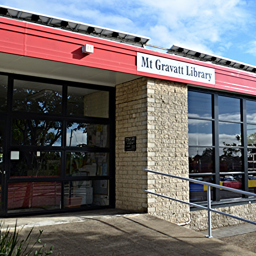
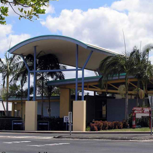

Results
We found 3 Hotspots that match your search query.Mt Coot-tha Botanic Gardens Library Wifi
Administration Building, Brisbane Botanic Gardens (Mt Coot-tha), Mt Coot-tha Road
Toowong, 4066

8 Creek Road
Mt Gravatt, 4122
Mt Gravatt Library Wifi
8 Creek Road
Mt Gravatt, 4122

Mt Ommaney Shopping Centre, 171 Dandenong Road
Mt Ommaney, 4074
Mt Ommaney Library Wifi
Mt Ommaney Shopping Centre, 171 Dandenong Road
Mt Ommaney, 4074